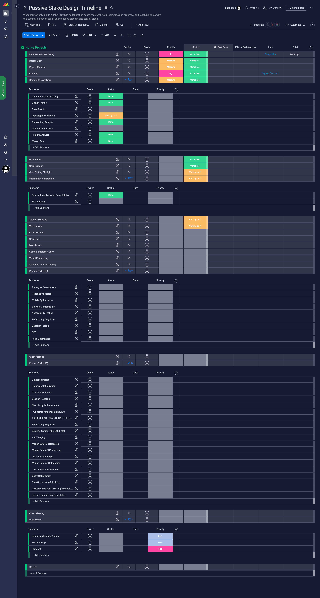
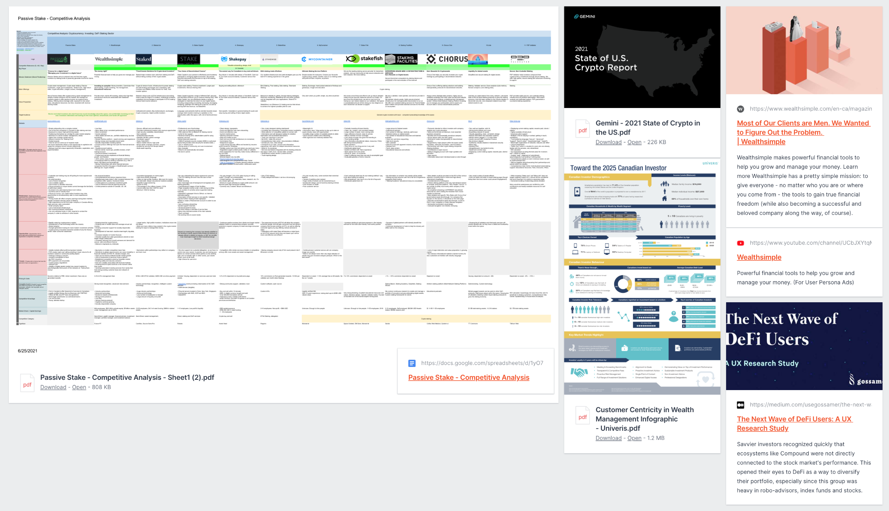

Passive Stake
- Date: June 2021 - Ongoing
- Role: Product Designer, Full-Stack Developer
- Category: Fin-tech, Cryptocurrency, Business
- Tools: Octopus.do, Flowmapp, Ntaskmanager / Monday, Milanote, Google Sheets, Google Docs, Miro, Discord, Figma, Blender
- Design Process: Waterfall (or “Hyper-iterative Waterfall"
Background
The project came about when a former colleague and good friend of mine reached out for help in developing the web presence and branding for their fin-tech startup. Being deeply interested in blockchain technology, cryptocurrency, and
the surrounding Web3 industry, I was incredibly excited and jumped on the opportunity. This is an ongoing project currently in development, and a project in which has helped me grow as a designer. The iterative nature of this client
project means that requirements have changed due to the regulatory requirements of cryptocurrency and client needs. Regardless, the case study will be provided in the context of its initial purpose.
Design is a learning
opportunity in more ways than one for me, and something I consider very personal to the development of my character and inner philosophies; as such, I try to adopt a stream of consciousness style of diary during my most meaningful*
projects.
As a new designer, I often feel like I’m missing some crucial step in the design process or executing the wrong way, so I used this project as an opportunity to refine my understanding of the fundamentals. Thankfully
my client did not have any deadlines and were open to giving me as much time as required - an opportunity that I imagine does not avail itself often.
As this was going to be a very large project, I wanted to make sure I was following a formal structure in which both the client and I could refer. I began drafting a design brief and we conducted our first meeting April 23, 2021. I met with the two co-cofounders and we discussed the most essential elements necessary to get me acquainted with their company, their vision, their problem, and their goals.
Overview
Passive stake wants to introduce your average retail investor into crypto currency. Most people do not have the interest or time required to properly educate themselves on the new buzzing technology, but want to capitalize on the opportunities the industry may present. Passive stake aims to manage clients' money for them and get basic information from them that will help inform how they want to invest. Broken down into terms (APY). Users can choose to focus on stable coins, altcoins, customly selected volatile tokens, or a mix of them. Staking can be entirely automated based on preference or self directed.
Objective
Passive Stakes’ objective in the market is to facilitate adoption of blockchain and cryptocurrency by informing the masses of curious and primarily unexposed retail investors. They aim to onboard new and first time crypto investors, and stake funds to passively generate income for clients.
Attitude
The client wants their style and tone to be simple and approachable; something retail investors can immediately feel comfortable using and an extension of what they are perhaps already familiar with - while mixing the hypermodern and clean look that we have come to expect from Web3 and Blockchain based companies without delving too far into complexity.
Target Audience
General novice and retail investors who don't have too much knowledge about the space, or time to educate themselves thoroughly - or are not too comfortable investing on their own. Investors interested and looking for the most optimal, streamlined, and hands off approach.
I then made a basic list of competitors that the client had identified, or that has resonated with them as sources of inspiration as a basic starting off point for later. Together we looked at Blockfi, Wealthsimple, Coinmarketcap, Pancakeswap, Zapperfi, Staked.us, Staking Rewards.
Desired Tone and Aesthetic
I created a table for the client composed of various keywords to help narrow down the specific tone and feel they had in mind. Ultimately they wanted something: approachable, high-tech, familiar, minimalist, modern, clean, corporate, simple. Basic qualifiers to be sure, but they helped slowly created a foothold of understanding that was paramount for moving forward and further developing.
We then went over the basic functionality they desired for their site which I will omit for brevity, as it is included in the later case study in more detail.
Finally we discussed budget and timeline. It was important for me to ensure I wasn’t undercharging myself for a project of this scale, but at the same time that I was taking into consideration the fact that my client is a new startup with less capital. Once we had decided on a price. A contract was created and development was underway beginning June 1st.
Approach, Timeline & Deliverables
For a project of this scale, I know I would need to utilize various tools to maintain order, and transparency. I utilized Monday for project planning and expected deadlines.
Market Research
Using Google Sheets for my competitive analysis was a godsend. I can’t imagine using any other tool at this point. I want my data to feel like data, and feel structured. Finding the right tools and process can really help to change your outlook on certain stages of the design process. The research stage can often feel a slow at times, but once I created a workflow for myself I found that I was thoroughly enjoying it. Upon reflection, 15 competitors was overkill haha. More is not always more.
After collecting data from the various competitors, I made note of the strengths and weaknesses of the companies. What aspects of their current UX or business models had proven track records of success? Which areas of weakness could my client improve upon? What about unique offerings that no other client website had? I then re-analyzed the Strengths and Weaknesses of the company so I could help refine how to bolster what worked well, and improve upon what didn’t with my new knowledge.
At times it was more important for me to switch gears and think like a business person than as a designer. Things like user retention, growth, conversion, onboarding - all became increasingly important topics as I moved forward.
User Research
For user research I decided that a deep-dive into market and trend explorations was the best method and use of my time, as the client and I mutually understood and had a very clear outline of our target user. Knowing I would not be conducting user interviews as a result of lockdown and widely available market data, I doubled the effort on the kind of data I would collect during competitive and market analysis.